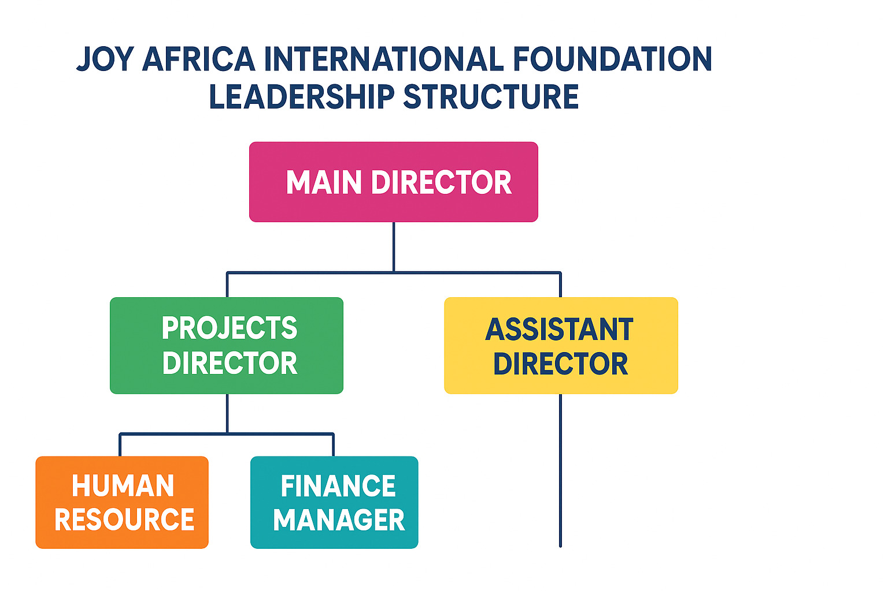
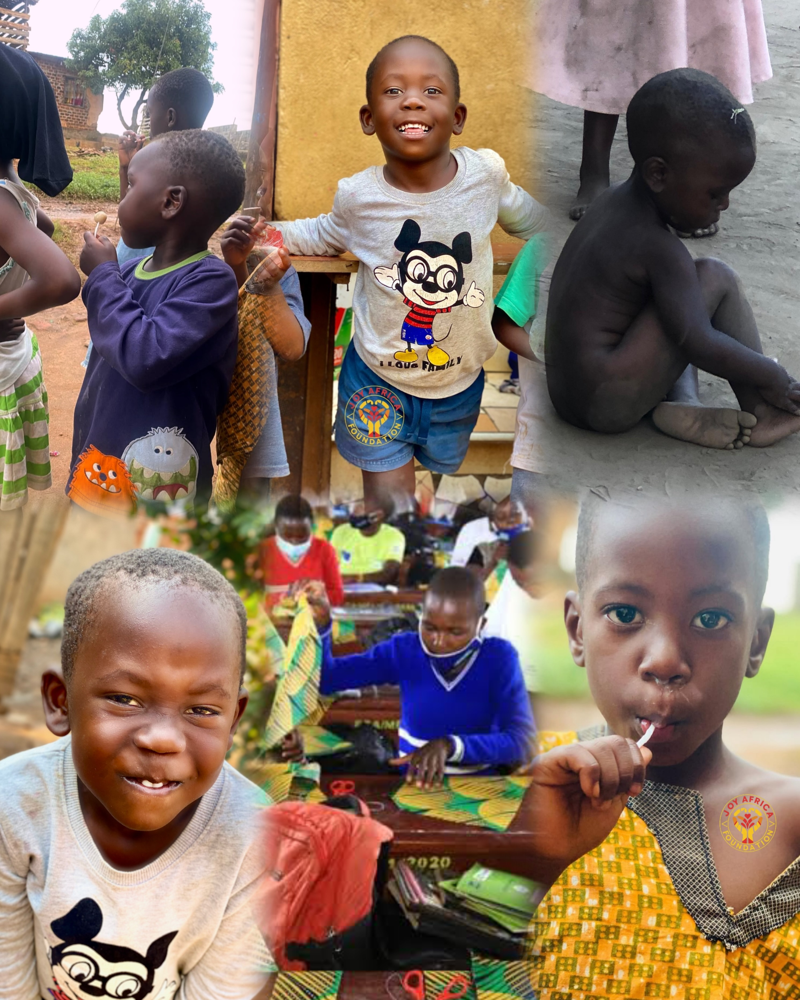

A Foundation Built on Faith, Hope, and Action.
Learn about our journey, our mission, and the leaders guiding our path to change lives across Uganda.
Explore Our WorkABOUT OUR FOUNDATION
JOY AFRICA INTERNATIONAL FOUNDATION is a Christian-founded organization.
2022 - The Beginning
African Heart International Organisation was founded in 2022 by Tumusiime Gonzaga. He began by calling for small donations for different communities, even though he had little himself. He was later joined by his friends, Mulocho Newton and Kulubya Paul, who also contributed to these efforts.
2023 - The First Child
In 2023, the foundation took in its first child, paying for school fees and providing care from the founders' own pockets while continuing with other small donations.
2024 - Growth and Impact
By 2024, the foundation was able to increase the number of sponsored children to 16, paying for both their education and medical treatments.
2025 - A New Vision
In 2025, the launch of new projects raises hope of reaching more communities and helping more people in need.
Purpose:
The purpose of JOY AFRICA INTERNATIONAL FOUNDATION is to improve the lives of children in communities around Uganda by providing them with access to quality education, healthcare, protection, and clean, safe water, empowering them to reach their full potential.
Aims:
- To provide a safe and nurturing environment for children to grow and develop.
- To improve children's access to quality education and healthcare.
- To protect children from exploitation, abuse, and neglect.
- To empower children and communities to take charge of their own development.
Objectives:
- To establish and operate schools, healthcare centers, and community programs that provide essential services to children.
- To provide educational materials, healthcare services, and other forms of support to children in need.
- To train and support community-based caregivers and educators to provide quality care and education.
- To advocate for policies and practices that promote the rights and well-being of children.
Goals:
Short-term goals:
- Establish partnerships with local communities and organizations to deliver services.
- Develop and implement programs that provide education, healthcare, and protection.
- Build a team of dedicated staff and volunteers to support the organization's work.
Long-term goals:
- Improve educational outcomes for children in target communities.
- Reduce child mortality and morbidity rates in target communities.
- Increase community awareness and engagement on child rights and protection issues.
- Establish sustainable funding streams to support the organization's work.
OUR LEADERSHIP STRUCTURE
Since we are raising future leaders, we must also lead by example. That’s why we have a strong leadership structure at JOY AFRICA INTERNATIONAL FOUNDATION. The diagram below shows our leadership levels.
MEET OUR FOUNDER AND DIRECTOR
TUMUSIIME GONZAGA
Tumusiime Gonzaga is a Ugandan man born on October 21st, 2002, in a small slum town called Kosovo in Kampala, Uganda. Raised in a God-fearing Christian family, his education was sponsored by an NGO called VISION FOR AFRICA INTERNATIONAL MINISTRIES, from Primary One through his diploma in Journalism and Media Studies. While growing up, he faced many challenges, such as the lack of a good health center, high levels of insecurity in the slum, and a lack of proper schools for his friends. All of this inspired him to start an NGO that would help other kids avoid the same problems he and his friends faced. JOY AFRICA INTERNATIONAL FOUNDATION acts as a symbol of change for these communities.
MEET OUR ASSISTANT DIRECTOR
MULOCHO NEWTON NDEMEZO
Born on April 4th, 1987, in the town of Kireka in Kampala, Uganda, Newton was raised by a God-fearing family. He is a loving father of three children, well-educated, and a professional chef. Despite being a family and working man, he took a major step in 2024 to join JOY AFRICA INTERNATIONAL FOUNDATION as our Assistant Director, supporting our Director on his journey.
MEET OUR PROJECTS DIRECTOR
KULUBYA PAUL
Our Mission in Action
Every photo tells a story of hope, resilience, and joy. Your support helps us write the next chapter.
